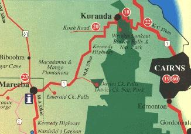
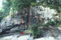
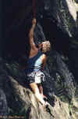
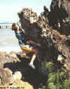
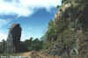
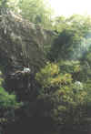
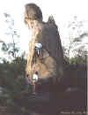
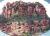

By Lee Skidmore, November 1999
Last updated 24 March, 2000

| Cairns Climbing Guide |
By Lee Skidmore, November 1999 Last updated 24 March, 2000 |
|
|
|
|
Most everything here is very incomplete and may be incorrect. I would appreciate Cairns climbers sending me info and pics. You will be credited for your contributions. |
 |
|
Above: Map of the region, showing the Cairns, Kuranda, and Mareeba |
| Accessed via Cairns | Accessed via Kuranda | Accessed via Mareeba |
| Barron Gorge Power Station | Glacier Rock | Davies Creek |
| Radiation Wall | Barron Falls | Forest Domes |
| Mackas Bluff | Lower Amphitheatre | Turkey Hill |
| Shady Wall | Rob's Monument | Emerald Creek |
| Trinity Beach | Granite Gorge | |
| Palm Cove | Mount Mulligan |
Barron Gorge Power Station
Areas
This area is located behind the suburb of Lake Placid and is quite good for bouldering and top roping. To access this area, start heading N on the main road through Cairns, eventually, you will see a skyrail station, go L there on the roundabout. Approx 1.5 km on your R you'll see a brown sign (Barron Gorge) - follow that. After approx. 1km take
the RH fork following the power station sign. Simply follow this road for about 6km and you'll
come to the end of the road (power station car park).
|
Radiation Wall |
 |
|
Above: Radiation Wall topo photo |
|
Mackas Bluff
Some routes here |
 |
|
Above: Jari Ekstrom on Loose As A Goose at Mackas Bluff |
Shady Wall
Again, situated below the power station in Baron Gorge and is located about halfway between the power station car park and Mackas Bluff on the other side of the river. The crag gets shade in the afternoon. All climbs are easy to toprope, and a few can be led with natural pro as well.
There are some climbs here that have been top-roped to around grade 23/24. I assume that there are other climbs here too.
Some routes here (from L to R)
- Saturday Special (22). Jari says "It's a crack climb...overhung, very pumpy first half, crack thins out and climb gets very balancy".
- Eel Fever (22). Surmounts a 2m roof then easier climbing through a delicate mantle and lay-away.
- Unknown name. Corner/face climb. First 3m is an easy 19 which ends with "I can climb this with sneakers on" territory. Good for
warm-ups.
Trinity Beach
Bouldering area
This bouldering area is in the Cairns northern beaches area. Once you get to the beach, turn right, drive as far as you can, start walking - follow the rocky outcrop about 200-300m. There are three good boulders. The middle one is best, the last one will cut your hands to bits, and the first is a bit dangerous if you come off and there is no one to spot you.
Climbing area
This info and route gradings contributed by Jari Ekstrom. To access this area, head towards the beach, turn L the street before last, keep driving
until you get to start of the dirt track (driveable). Drive all the way to end and park your car there. Start walking south (towards Cairns) on the rocks about 300-400m, to the wall (about 12m high).
- most L-hand side corner climb, grade 28/29.
- next climb is about 2m to the R. There are four different ways to start for first 3m: ex hard (24), hard (21), med (19), easy
(16). The most R-hand start is about 5m from first climb. The start of the climb is different kinds of
cracks. The climb continues as a face route to the top (20).
- last climb is a very easy start for first 5m (14) and last 6m is overhung with big pockets and a crack. It can be done directly (tape your hands) (23) or layback from crack (19).
In addition, there are good rocks to boulder on around this wall.
|
Palm Cove |
 |
|
Above: Stephen Baskerville mid-dyno. Just check out those huecos! |
Glacier Rock
It's near the Rainforest Estate and above the Kuranda railway line.
The Red Triangle is a 50m high face that is vertical and overhung in parts. It offers naturally protected climbing on jugs, pockets and edges.
Some routes here
- Juggernaut 45m (18). Starts L of the gentle arête and is climbed in two pitches. Climbs through several small caves and overhangs and has great views of Cairns and Green Island.
- Tunnel Vision (18). The crack L of Juggernaut.
- R of the gentle arête, Trained Tourists leads up to a belay cave.
Barron Falls
This is the main area for lead climbing. It is located upstream from the power station and approached through Kuranda. It consists of many cliffs, two large amphitheatres and a pinnacle. More than 40 climbs from 12-23+ had been established by 1994. To access, go to Barron Falls National Park (follow the signs from Kuranda - about 6km). On the lookout where the shelter is, go over the fence and follow the narrow track down to the gorge (about a 20 min walk).
Watch out for snakes.
Some routes here
- Head over Eels (20). An airy, delicate traverse at mid-height across the back of the pinnacle and 25m above the water to a crack splitting an overhang to an eyrie-like belay and rap station.
- Diving Board (15). A 30m arête, split by cracks rising out of a clear pool.
Lower Amphitheatre
Some routes here
- Peanut Butter Spider (17).
- Cucumber Castle (21) to the right of the above climb through a 45deg overhang.
- Eels on the Catwalk (14) further to the right again.
- A Chalk-bag Full Of Eels (16) beginning at the top of the ramp.
Some clean, sweeping dihedrals that lead directly up from the ramp give great climbing:
- Upwardly Mobile (22) on the left.
- Hydro-man (20) on the right.
- Tag Team (19) a 40m, steep, sustained face and crack climb in the Lower Amphitheatre.
- Edge Your Bets (18) to the left of Tag Team. A 30m sheer sweeping wall with a series of small
horizontal edges.
At the back of the Lower Amphitheatre there are over 10 routes. Here's one:
- French Connection (20) the first route to go through to the Upper Amphitheatre.
On the far side of the Lower Amphitheatre:
- All Chalk and No Action (23) a very thin route involving delicate stemming.
|
Rob's Monument
Facing the pillar from the tracks, a hard-looking grade (21) ascends the L arête with 3 BR's. Now walk around to the downhill side of the pillar. On the L arête of this opposite side is a grade (18) with 3 BR's. Starting a few metres R of the (18) is a grade (19). It has 5 bolts - all BR's, except for the second, which is a FH. Now back to the tracks. Opposite the pillar, on the other side of the tracks, is a smooth 10m high slab. A (22) goes right up the middle of this with 3 BR's. |
 |
| Above: Rob's Monument | |
|  | |
|
Above: Baskerville brothers top roping the 22 slab opposite Rob's Monument |
Davies Creek
Any map can show you how to get here. From Kuranda, drive towards Mareeba for about 20km then turn L into Davies Creek National Park (there is a sign). After about 6-8km of dirt road, you'll get to a car park. Walk down 200m to lower lookout on your right hand side and you will see a "split" rock. On the R hand side of it is a walking track down. On the L hand side of the lookout, walk about 50m and you'll see the 12m rock face. There are two climbs on it (both crack routes). Keep walking down and you'll get to a lower cliff face. There are a few climbs here.
Some routes here
- Crack Job 12m 19
- It Can Be Done 20m 21
- Pumping 12m 24
- As Good As It Gets 12m 26
Forest Domes
Close to Davies Creek National Park between Cairns and Mareeba is this granite area. There is a two kilometre long ridge of granite domes, slabs and cliffs up to 50m high with the elevation offering cool conditions and fine views. About 40 routes have been established in ground-up style and some are reputedly absolute classics.
Turkey Hill
[Click here for a basic guide]
Cool! This area is located six kilometres outside Mareeba and is adjacent to the road. You could easily day-trip out here from Cairns - it's not too far, less than an hour. A 10 minute walk leads to granite boulders and slabs. There are over 30 routes between 10m and 20m high. Look at my guide for more information.
[Click here for bouldering guide]
Emerald Creek offers
some of the finest bouldering in the North Queensland region, and has the
advantage, (or disadvantage?), of being only 15 minutes from Mareeba. The
problems are all on moderate sized granite boulders. There are over 30 existing
problems up to about V3, although this guide only mentions the better problems.
To get to Emerald Creek, drive along the highway from Mareeba to Cairns and take
the turn off to the TAFE, (about 2km out of town), on the R hand side. About 3km
along this road you will reach a hill, at the top of which there is a road
turning off to the L. Follow this all the way to Emerald Creek. For more
information, see the guide.
Granite Gorge
This info contributed by Steve Baskerville.
To get to the gorge follow Chewko Rd from Mareeba as though you were travelling to Turkey Hill. About five minutes past Turkey Hill, at the top of a ridge, there is a turn off on the right hand side of the road with a small "Granite Gorge" sign. Take this road and follow the signs until you reach the parking area. The gorge is privately owned and entry costs $1 for adults and 50 cents for children. Although the guy in charge doesn't normally mind if you climb, it is best to ask first.
|
The only climb done so far to my knowledge climbs the pillar of rocks known as
Turks Head. To get to Turks Head look at the map at the start of the walking track or ask directions from the owner. The
unnamed 8m 14 (shown right) takes the left trending line of cracks that start just above the large scoop on the SW side of the pillar. It was first climbed by Jason Shaw, Steve Baskerville, Tristan Baskerville and Ramses Lich. There is another possible line 5m R of the above climb in the expanding offwidth. To get down, rap off one of the large boulders on top. |
 |
|
Above: Jason Shaw leading up the 14 on Turks Head |
|
Mount Mulligan |
 |
|
Above: An excellent looking buttress on Mt Mulligan |
Many granite outcrops have been investigated around Atherton, Mareeba and Mt. Molloy. Mossman Gorge Bluff has been described as a 250m mini-version of El Cap. Getting to the base is the challenge!

{kind=link}
{kind=link}
{kind=link}
{kind=link}
{kind=link}
{kind=link}
{kind=link}